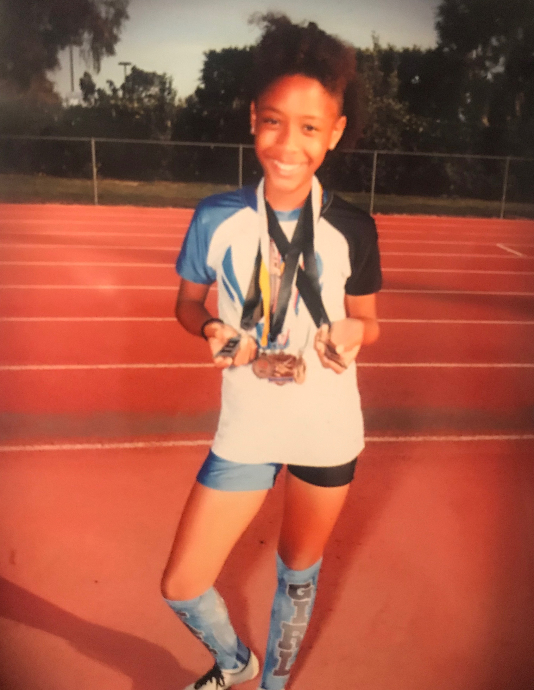
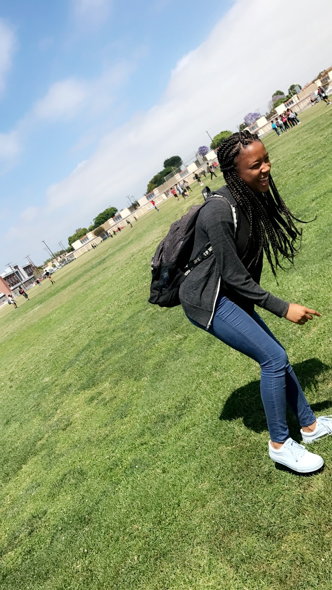
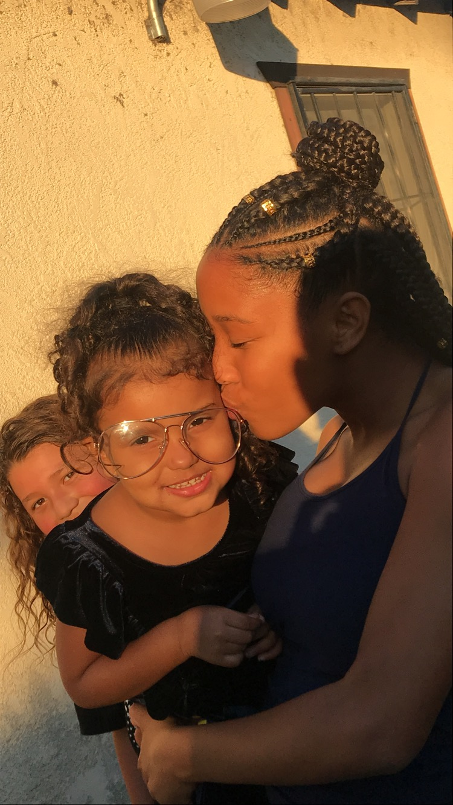

My 6th grade year
During my 6th grade year I wasn’t shy or scared for middle school. As the time came for middle school i felt ready and when the day came I loved it. Throughout the school year I stopped talking to the kids I came with and branched off in my own group. Honestly throughout the year I had breeze and everything went so fast that couldn’t believe it was over. My 6th grade year was not how i thought it would be but, instead easy and fun. I had a fun 6th grade experience and gained more confidence when i made the track team. This was one of my best accomplishments because i was put on the A team rely and we one first place. I will forever remember my 6th grade experience.
My 7th grade year
7th grade was a learning experience for me. I came to 6th grade with so many friends but soon found out that sometimes you lose friends and gain some. During 7th grade i became the captain of the track team and became more involved with the school. I got a lot of more friends and had teachers that I look up to and have helped me deal with some of my life experiences. In 7th grade I really locked down on my grades for the hope of getting into a good high school.While in 7th grade I started to learn that you can have other friends and you grow and change as you grow up and so do your friends
My 8th grade year
So far 8th grade still doesn't seem like grade. I have reconnected with many of my old childhood friends for the fear of losing them and not being able to see them again.At first I was scared of the thought of going to a new school and losing contact with some of the girls I call family. Now i feel that if these people are really my family we will keep in contact and be forever family. I have been going to different high school trying to decide where i wanna go. I have my heart set on Satin Anthony, but my other choices are Polly and Millikan. This year i’m really involved and i am planing our eighth grade events and graduation.
